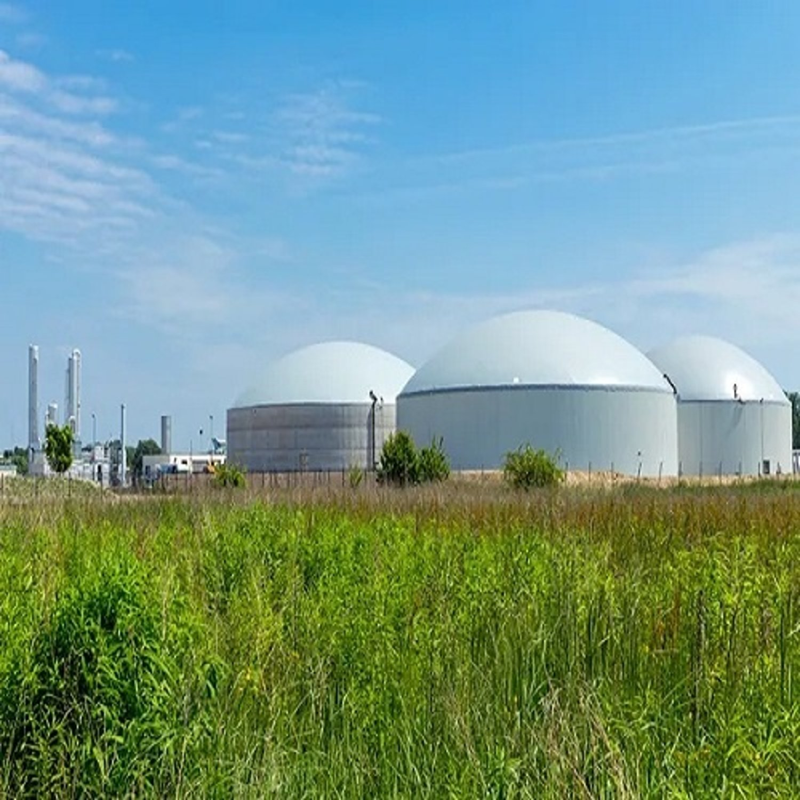
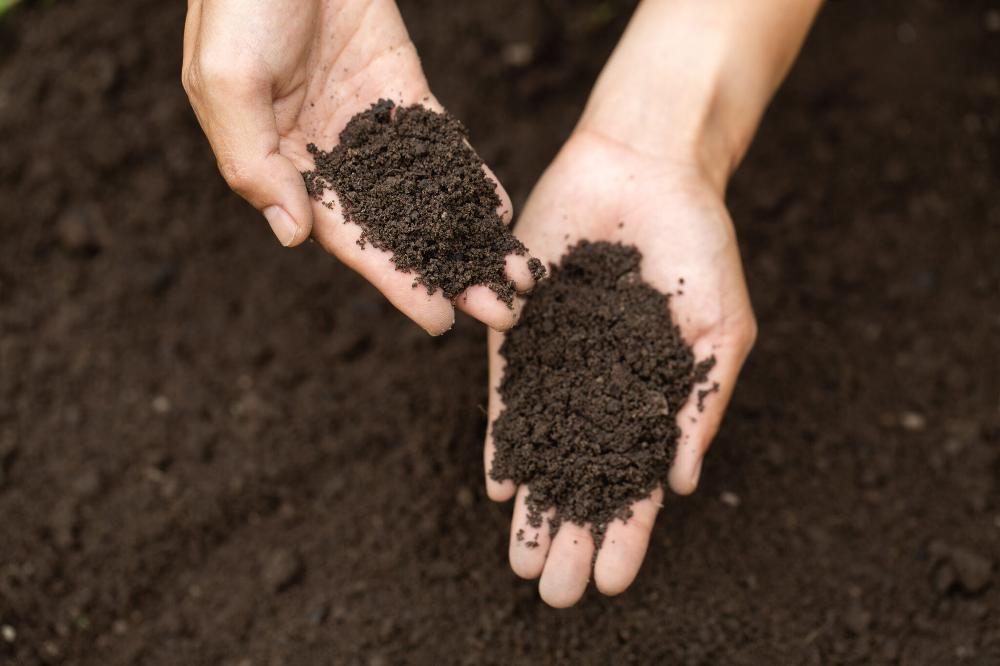

Sustainable solutions from agri waste: Compressed Bio Gas and Fermented Organic Manure for a cleaner, greener India.

Our Compressed Bio Gas, also known as Renewable Natural Gas, is produced through the anaerobic digestion of biodegradable materials. It is a clean, green alternative to fossil fuels with applications in transportation, industrial heating, and power generation.
CBG is produced under the Government of India's SATAT (Sustainable Alternative Towards Affordable Transportation) initiative, which aims to promote compressed bio gas as an alternative to conventional fuels.
Fermented Organic Manure is a by-product of our anaerobic digestion process. The digestate goes through our proprietary enrichment process using state-of-the-art technology to enhance its nutrient content, making it a potent and valuable input for farmers.
FOM improves soil health, increases water retention, promotes beneficial microbial activity, and enhances crop yield, all without the harmful effects of chemical fertilizers.

Our anaerobic digestion process transforms agricultural waste into two valuable products through a carefully controlled biological process.
Press mud, Napier grass, paddy straw, poultry litter, cow dung, and other biodegradable agricultural waste.
Micro-organisms break down material in oxygen-free environment, producing raw biogas and digestate.
Raw biogas is purified, removing CO2 and impurities, then compressed to produce vehicle-grade CBG.
Digestate is enriched with our proprietary technology, increasing nutrient content for premium organic manure.
We utilize a wide range of biodegradable agricultural materials as feedstock for our anaerobic digestion process.
Paddy straw, Napier grass, and other crop residues that would otherwise be burned.
Press mud from sugar manufacturing and other food processing by-products.
Cow dung, poultry litter, and other animal waste converted into clean energy and manure.
Get in touch to learn more about our CBG and FOM products, pricing, and supply partnerships.
Contact Us